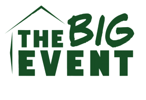
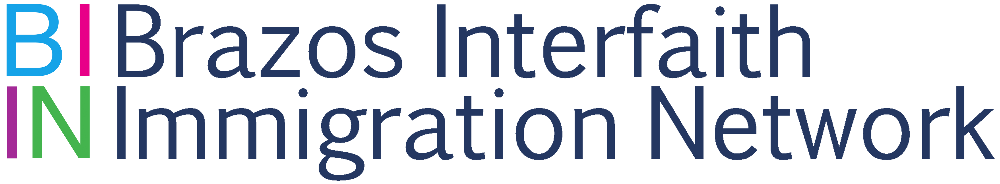
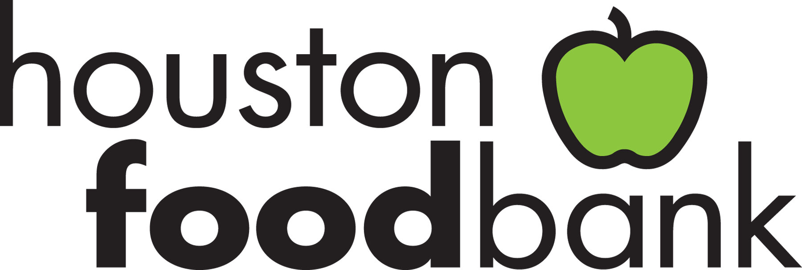
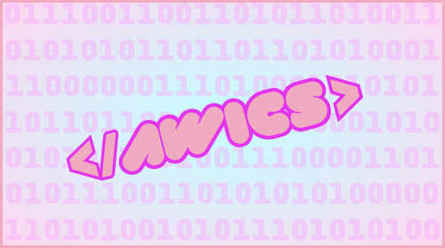

The Big Event is the largest one-day, student-run service project in the nation where tens of thousands of Texas A&M students come together to say “Thank You” to the residents of College Stationa and Bryan.
I volunteered at The Big Event at Texas A&M University, working with the IEEE-HKN chapter to assist with cleaning, distributing mulch, and gardening.

BIIN's mission is to uphold the dignity and well-being of all immigrants in our community, advocating for improved access to legal, educational, and social services.
I volunteered in the English classes offered to Hispanics learning English, helping to support their language development and integration.

The Houston Food Bank is a non-profit organization dedicated to combating hunger in the community.
As a volunteer, I helped sort and package food donations, ensuring they reached individuals and families in need across the Houston area.

As a current member of Aggie Women in Computer Science (AWICS), I would like to contribute to the Rubies program as a mentor.
As a mentor, I would like to be paired with a mentee to provide guidance, support, and encouragement throughout their academic journey.
Through this mentorship, I aim to help them navigate the challenges of their studies, share valuable insights from my own experiences, and foster a positive, empowering relationship that promotes both personal and professional growth.

 Home
Home
 Portfolio
Portfolio
 Qualifications
Qualifications
 Service
Service
 Contact
Contact